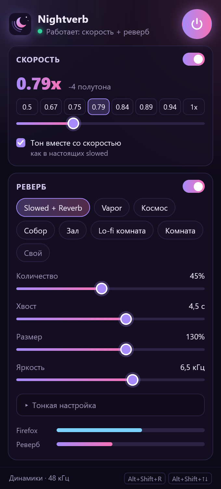
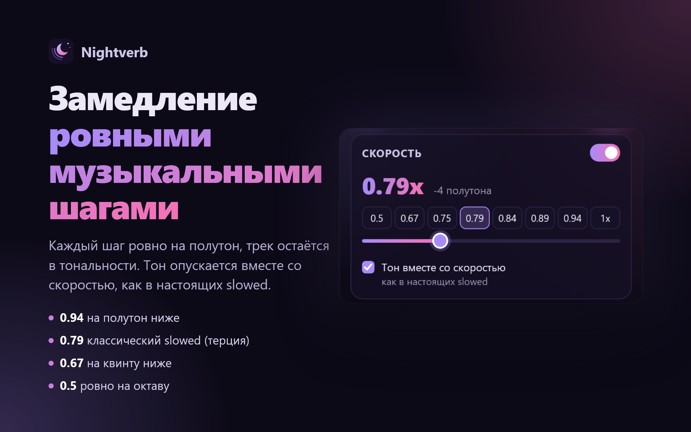
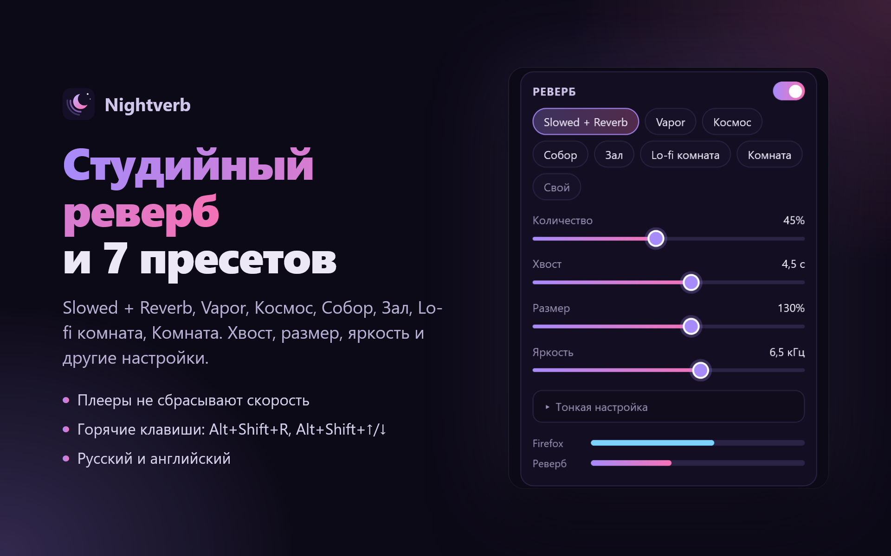

Slowed + reverb для любой музыки в Firefox
Замедление ровными музыкальными шагами и студийный реверб в один клик. Яндекс Музыка, YouTube, SoundCloud, VK, Spotify и большинство сайтов.
Без регистрации, пробных периодов и слежки. Открытый код (MIT).

Всё, что нужно для slowed + reverb
Сделано человеком, который каждый день слушает slowed + reverb и устал от платных расширений с пробными периодами.
Ровные музыкальные шаги
Каждая кнопка скорости ровно на полутон ниже, трек остаётся в тональности. Тон опускается вместе со скоростью, как в настоящих slowed, или меняется только темп.
Студийный реверб
Семь пресетов (Slowed + Reverb, Vapor, Космос, Собор, Зал, Lo-fi комната, Комната) и тонкая настройка хвоста, размера, яркости и не только.
Плеер не собьёт скорость
Сайты любят возвращать 1x на следующем треке. Nightverb держит вашу скорость через треки, плейлисты и переходы по страницам.
- 0.94 полутон
- 0.89 тон
- 0.84 малая терция
- 0.79 классический slowed
- 0.75 кварта
- 0.67 квинта
- 0.5 октава
Работает там, где вы слушаете
- Яндекс Музыка
- YouTube
- SoundCloud
- VK
- Spotify*
- и большинство сайтов
* Spotify защищает звук, и никакое расширение не может обработать его напрямую. В Windows реверб добавляет бесплатный необязательный аудиокомпонент Nightverb на уровне системы, не обходя никакую защиту. Окно расширения предлагает его только там, где он нужен.


Частые вопросы
Как сделать slowed + reverb прямо в браузере?
Установите Nightverb для Firefox, включите трек и нажмите пресет Slowed + Reverb в окне Nightverb. Трек замедлится до 0.79 (на четыре полутона ниже) и получит студийный реверб. Скачивать песню не нужно.
Работает ли на Яндекс Музыке?
Да. Замедление и реверб работают сразу на Яндекс Музыке, YouTube, SoundCloud, VK и большинстве других сайтов, в любой операционной системе.
Работает ли на Spotify?
Spotify защищает звук, поэтому никакое расширение не может обработать его напрямую. В Windows реверб добавляет бесплатный необязательный аудиокомпонент Nightverb на уровне системы; окно расширения предложит его только на таких сайтах. Никакая защита не обходится.
Это бесплатно?
Да: без пробного периода, подписки и регистрации. Открытый код под лицензией MIT.
Почему 0.94, 0.89, 0.79, а не круглые числа?
Каждая кнопка ровно на полутон ниже (0.5 это октава), поэтому замедленный трек остаётся в тональности, а не попадает между нот. 0.79 это четыре полутона, классический slowed.
Собирает ли расширение данные?
Нет. Звук обрабатывается на вашем компьютере, ничего не записывается и никуда не отправляется. Настройки хранятся в браузере.
А для Chrome или Edge?
Пока Nightverb только для Firefox. Версия для Chrome и Edge в планах.